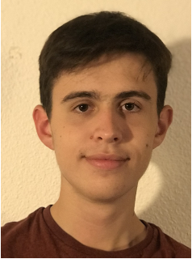
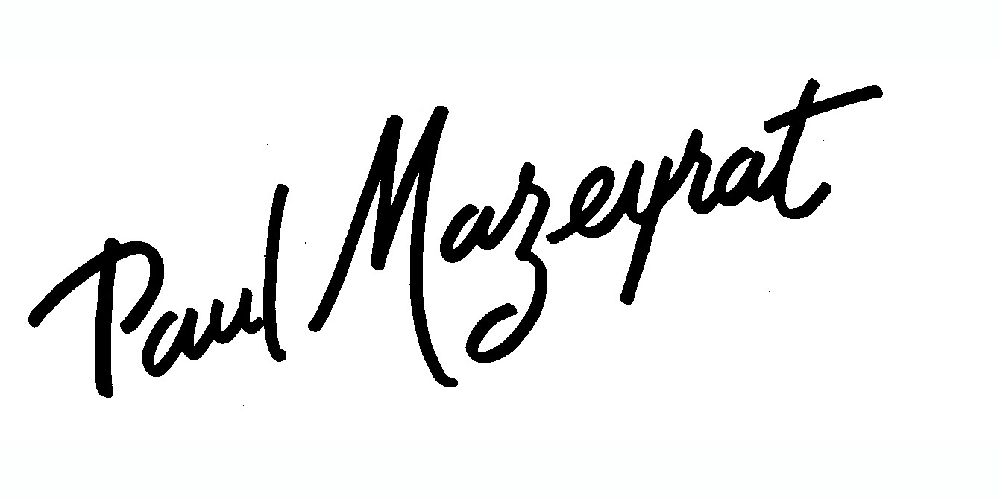
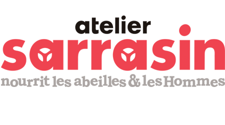

Notre équipe
Décentralis'HEC c'est d'abord une famille d'une trentaine de personnes et un bureau motivé.
- Président Baptiste Naves
- Vice-PrésidentAntoine Ducarme
- TrésorierValentin Abribat
- Secrétaire généralArmand Fevelat
Nos projets

Décentralis'HEC est avant tout une association qui se bat pour l'égalité des chances entre les territoires. Nous organisons des conférences dans des lycées de départements ruraux pour partager nos parcours et éclairer les élèves sur les voies d'accès aux grandes écoles et surtout à HEC
Décentralis'HEC tient également à animer le campus en organisant des activités dans la fameuse "kfet" d'HEC le samedi soir. Nos membres sont présents pour servir des bières, projeter des évènements sportifs ou encore vendre à manger. Ainsi, n'importe quel élève présent sur le campus le samedi soir peut trouver un lieu chalereux où passer son temps. Mais nous participons aussi à la vie du campus le week-end notamment lorsqu'il s'agit de représenter le mode de vie à la française

Décentralis'HEC a aussi pour objectif à plus long terme d'organiser des voyages dans des territoires de France éloignés des lieux touristiques traditionnels. Ces voyages seraient l'occasion de mettre en lumière la richesse de nos territoires particulièrement en ce qui concerne les étudiants internationaux
Nous aider
Comme vous le savez, tous ces projets nécessitent des moyens dont l'association manque pour l'instant cruellement. Ainsi, si le projet Décentralis'HEC vous tient à coeur, n'hésitez pas à remplir le formulaire ci-dessous :
Nos partenaires
- 
- 